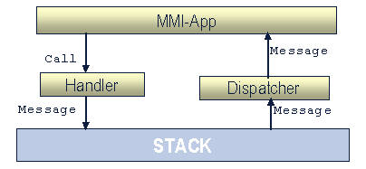

ASC Overview
1 Introduction
ASC (The APOXI Stack Control) offers an abstract interface to access mobile communication requirements, like GSM/GPRS/UMTS. It is designed to keep the application development as independent as possible to any proprietary protocol stack facilities. APOXI contains also an exchangeable layer (APC) for external communication The only purpose of the APC is the transformation of SDL-signals into C++-wrapper classes and back. The functionality for controlling the protocol stack resides in the ASC. ASC runs in context of the calling application, which makes it easy for custom applications to access its functionality.
ASC provides a common interface to various protocol stacks. The position of ASC within APOXI is shown in figure 1.
Figure 1. Position of ASC in APOXI
2 Handlers
One of the key concepts of the ASC is the “Handler concept”. The idea is to enable a separate activation of various stack functions like Call, SMS, Cell-Broadcast, Supplementary Services, etc. Every APOXI Handler hides the signal flow (from and to the protocol stack) from the application to ease the handling of its “real job“.
One special handler is the MainHandler. It is the main interface or the entry point of the APOXI Stack Control library. It provides a scalable use of the protocol stack functions. The MainHandler offers the possibility to mount, unmount and access APOXI handlers. Any application can access its MainHandler-functionalities simply by using the static StackControl() methods.
Every APOXI Handler beside the MainHandlers represents a collection of functions concerning the protocol stack (e.g. call handling, SMS handling, ...). The various handlers are mounted via the StackControl to the specific MainHandler of the calling application. They are all subclasses of the abstract base class BaseHandler, which defines their common interface.
Some of the Handlers are listed in the following:
3 ASC Dispatchers
The ASC-dispatchers realize the asynchronous interface of the ASC-Handlers. Besides notifying the associated handlers about the triggered events, they often transform the triggered event into one or more messages applications may listen to.
4 Interaction between Handlers and Dispatchers
The various types of communication between ASC and applications are described in this section. There are both asynchronous communication and synchronous communication.
4.1 Asynchronous Communication
An example for simple communication between MMI application and stack is shown in the following figure.
As shown in the example, in such communication, when an application makes a function call, the handler sends that message to the stack.
The following figure shows the asynchronous messaging handled by the handlers and dispatchers in ASC.
 |
In such an asynchronous communication, when an application makes a function call, the Handler sends the message to the stack and the message from the stack is caught by the Dispatcher. Dispatcher then dispatches the message to the application.
4.2 Synchronous communication
An example for the asynchronous communication handled by the ASC is shown in the following figure.
In a synchronous communication, when an application makes a function call, the Handler sends the message to the stack and enters into a wait mode by calling Wait() until it gets a response. The message is caught by the dispatcher and it sends the return value to the handler and handler then returns the result to the calling function.
5 Supplementary Services Handling
The ASC offers also a concept called Supplementary Services Handling. Its purpose is to offer an easy to use programming interface (API). This special API focuses on three parts:
The Input analyzing allows syntactical analyzing of MMI input strings as defined in 3GPP 22.030 V4.0.0. The Input analyzer iterates through a list of InputAction objects and returns the object when the string matches its rules. The ASC also includes a feature called Call Independent Supplementary Services. But the Supplementary service interface, in general, is an Active-wait-based interface for sending the supplementary service requests to the protocol stack. The received return value indicates if the request was accepted by the Mobile Network (MN).